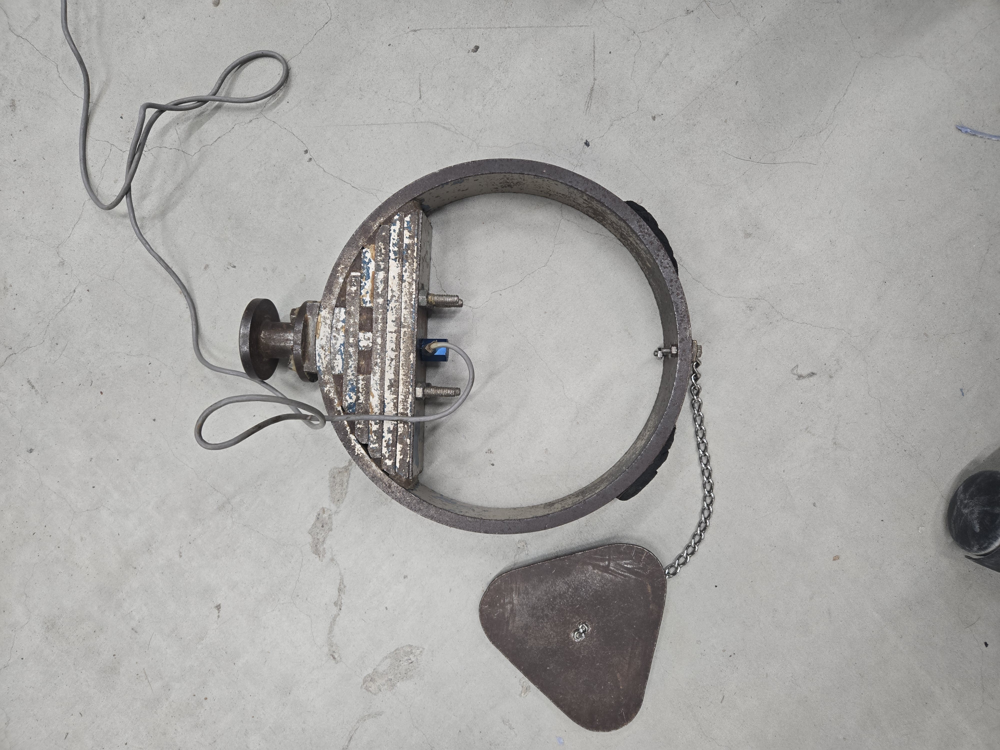

状況に応じた床材を選定するために、かたさの妥当な測定方法を考える。
日本では、特に住宅や高齢者施設、介護施設、幼児施設などの床は靴を脱いで使用することが多いです。こうしたいわゆる"上足床"二上では、歩く以外にも座ったり寝転がったりと様々な動作が行われるます。そのため、足裏以外にも様々な身体の部位が直接床に接することから、床に要求される性能は多様化します。この時、床の変形によって感じる床のかたさや感触は、利用者の快適性や、動作のしやすさと強く関係するため、適切に床のかたさを評価できる指標を作ることが必要となります。
こうした背景を踏まえ、本研究室では、様々な状況における床のかたさを評価することのできる試験機や試験方法の確立を行ってきました。検討の中では、実際に人が感じる床のかたさと対応する性能値を設定することで、実状に即した評価の設定を目指しました。これらの研究で得られた成果は、例えば施工時の適切な床材の選定を行う際、その指針として役立ちます。
(上図：かたさ試験に使用する静的載荷装置 下左図：転倒衝突時のかたさの試験に使用するヘッドモデル 下右図：かたさの測定に使用する人の立位時における足裏の荷重分布)